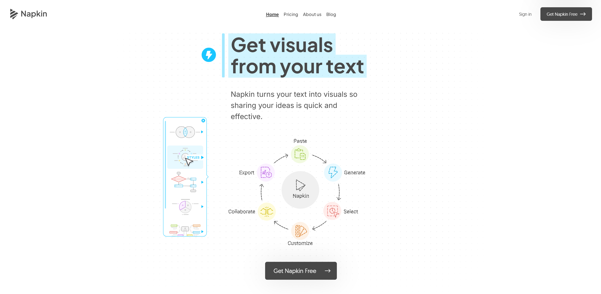

Présentation
Il est vrai que la promesse est belle, transformer un texte en infographie et contrairement à
NotebookLM, les visuels obtenus sont entièrement modifiables.
En creusant un peu, on découvre que c'est surtout la
manière dont l'outil "réfléchit" qui est intéressante. Napkin ne se contente pas de mettre des
icônes au hasard ; il cherche la structure logique de ton propos.
Vous pouvez coller un texte personnel existant ou demander à l'IA de Napkin AI de le générer automatiquement en décrivant vos
idées. Enfin, vous pouvez importer d'autres documents et demander à L'IA de les analyser pour
les
convertir en texte.
Napkin AI fonctionne de la manière suivante :
- Il procède à l'analyse contextuelle de votre texte
L'IA lit le paragraphe et comprend les relations entre les idées (hiérarchie, cycle, opposition, liste). Un scan du texte est effectué pour repérer les connecteurs logiques et proposer les illustrations les plus adaptées.
par exemple :- Si "Ensuite", "Puis", "Finalement" sont utilisés : Il proposera des Timeline ou des Workflows.
- Si "Mais", "Cependant", "Versus" sont utilisés : Il proposera des graphiques de Contraste ou des balances.
- Si on liste des composants : Il créera des Mind Maps ou des roues de composants.
- Génération visuelle (Napkins) : Elle propose plusieurs styles de schémas
pour illustrer ce texte précis.
Le bouton "spark" ⚡️ est le cœur de l'interface. Il suffit de surligner une phrase ou un paragraphe, cliquer sur l'icône "Spark", et une bibliothèque de styles apparaît sur le côté. Un choix peut se faire alors entre :- Le style "Sketch" : Pour un look "dessiné à la main" très propre.
- Le style "Flat" : Plus corporate, minimaliste et professionnel.
- Le style "Isométrique" : Pour donner un peu de relief et de modernité.
- Édition dynamique : Contrairement à une image fixe générée par DALL-E, chaque élément du schéma (icône, texte, couleur) est modifiable manuellement.
Les avantages de Napkin.AI
| Fonctionnalité | Napkin AI | Outils de Design Classiques |
|---|---|---|
| Vitesse | Instantané (quelques secondes) | Manuel (plusieurs minutes/heures) |
| Compétence requise | Aucune (juste savoir lire/écrire) | Maîtrise des calques et des formes |
| Flexibilité | Texte et visuel sont liés | Visuel déconnecté du fond |
| Export | PNG, SVG, PDF | Souvent limité en version gratuite |
🎨 Edition post-IA
C'est là que Napkin bat les générateurs d'images classiques (comme Midjourney). Une fois le schéma généré :
- Changement d'icône : Si l'IA a mis une icône de pomme et que vous préférez une poire, cliquez sur l'icône et choisisez-en une autre dans leur immense bibliothèque.
- Ajustement des flèches : Vous pouvez étirer, tordre ou supprimer les liens entre les blocs.
- Charte graphique : Vous pouvez définir une palette de couleurs (ex: le bleu de ta boîte) et l'appliquer à tous tes schémas en un clic pour une cohérence totale.
⚠️ Limites à connaitre
- Le texte en français : L'interface est souvent en anglais, mais il comprend très bien le français pour générer les schémas. Cependant, vérifie toujours que les mots n'ont pas été coupés bizarrement dans les bulles.
- La complexité : Si on lui donne un texte de 3 pages d'un coup, il va s'emmêler les pinceaux. Napkin brille sur des blocs d'idées précis (entre 2 et 10 lignes).
- Export : En version gratuite, tu as un quota. Pour une utilisation pro intensive (export en SVG pour agrandir sans perdre de qualité), il faut souvent passer à la caisse.